# MYSQL8 新特性
# 窗口函数
窗口函数的作用类似于子查询中对数据进行分组，不同的是，分组操作会把分组的结果聚合成一条记录，而窗口函数是将结果置于每一条数据记录中。
# 窗口函数分类
可分为静态窗口函数和动态窗口函数。
- 静态窗口函数的窗口大小是固定的，不会因为记录的不同而不同
- 动态窗口函数的窗口大小会随着记录的不同而变化。
窗口函数总体上可以分为序号函数、分布函数、前后函数、首尾函数和其他函数，如下表：
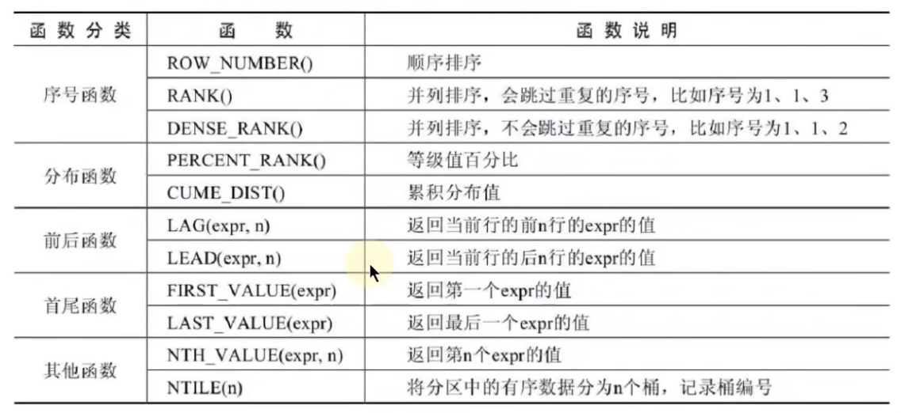
# 语法结构
函数 OVER （[PARTTITION BY 字段名 ORDER BY 字段名 ASC｜DESC]） |
或者是
函数 OVER 窗口名 ....WINDOW 窗口名 AS（[PARTTITION BY 字段名 ORDER BY 字段名 ASC｜DESC]） |
- OVER 关键字指定函数窗口的范围
- 如果省略后面括号的内容，则窗口会包含满足 where 条件的所有记录，窗口函数会基于所有满足 WHERE 条件的记录进行计算
- 如果 OVER 关键字后面的括号不为空，则可以使用如下语法设置窗口。
- 窗口名：为窗口设置一个别名，用来标识窗口
- PARTITION BY 子句：指定窗口函数按照哪些字段进行分组。分组后，窗口函数可以在每个分组分别执行。
- ORDER BY 子句：指定窗口函数按照哪些字段进行排序。执行排序操作使窗口函数按照排序后的数据记录的顺序进行编号
- FRAME 子句：为分区中的某个子集定义规则，可以用来作为滑动窗口使用。
# 分类讲解
# 序号函数：
ROW_NUMBER 函数：
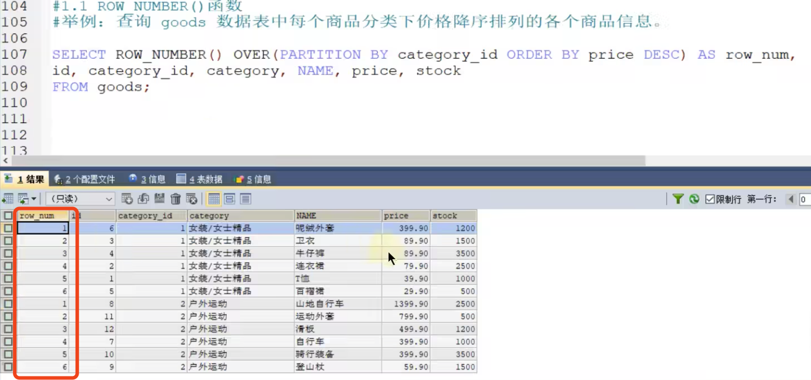
RANK 函数：
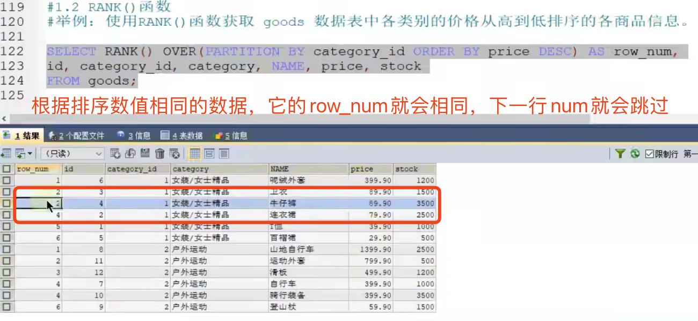
DENSE_RANK 函数和 RANK 函数相反。
# 分布函数
PERCENT_RANK 函数：
此函数是等级值百分比函数，按照公式 来计算。
其中 rank 的值为使用 RANK 函数产生的序号，rows 值为当前窗口的总记录数。
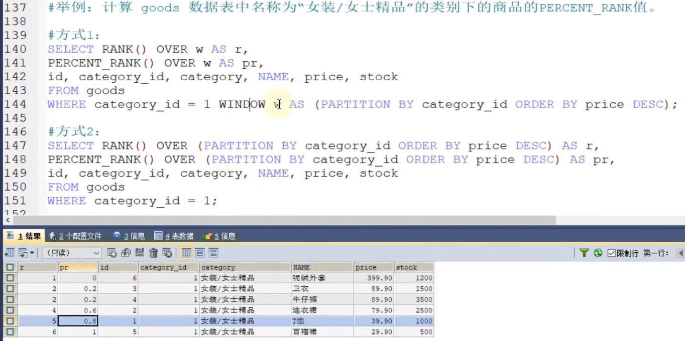
CUME_DIST 函数:
此函数主要用于查询小于或等于某个值的比例
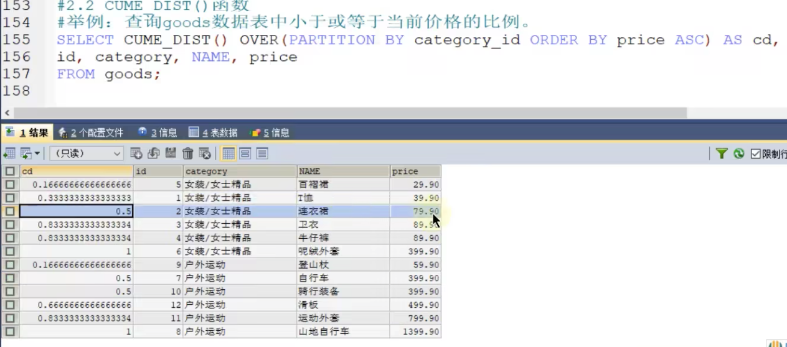
# 前后函数
LAG (expr,n) 函数：
LAG (expr,n) 函数返回当前行的前 n 行的 expr 值。
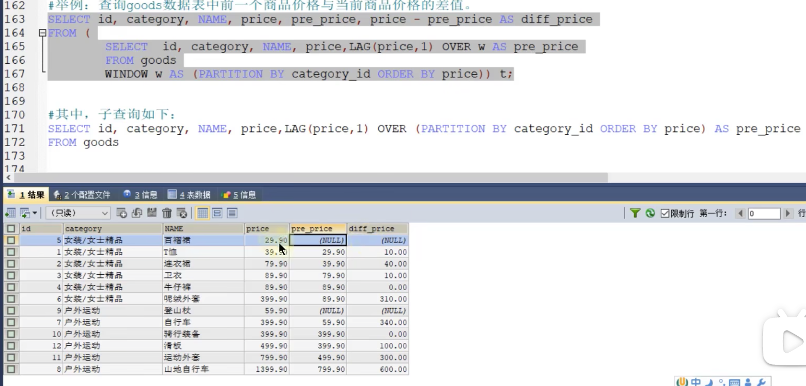
LEAD (expr,n) 函数：
LEAD (expr,n) 函数返回当前行的后 n 行的 expr 的值。
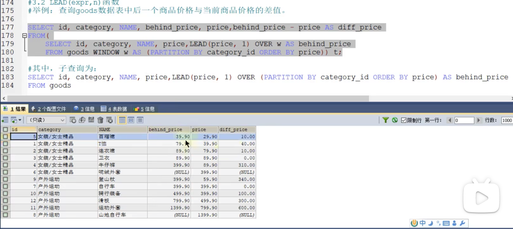
# 首尾函数
FIRST_VALUE (expr) 函数
FIRST_VALUE (expr) 函数返回第一个 expr 的值。
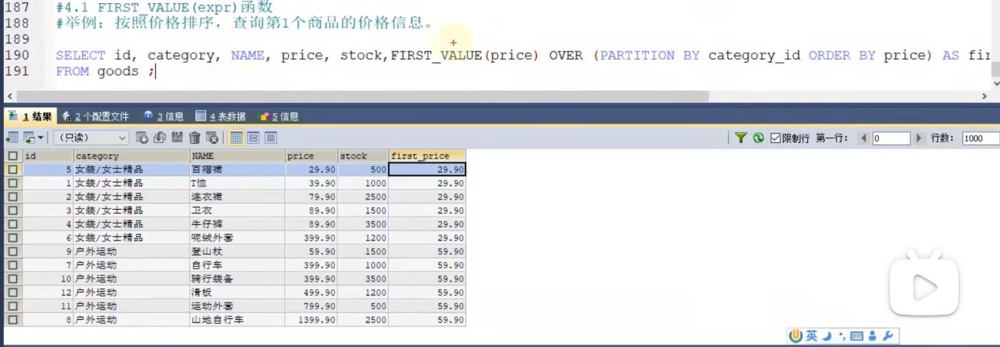
LAST_VALUE (expr) 函数：返回最后一个 expr 的值。
# 其他函数
NTH_VALUE (expr，n) 函数：
NTH_VALUE (expr，n) 函数返回第 n 个 expr 的值
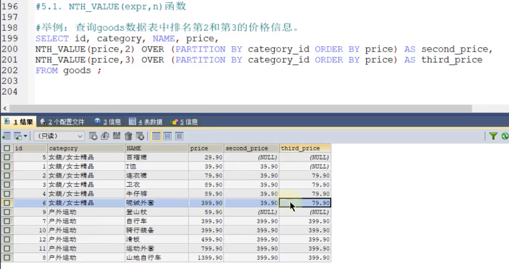
NTILE (n) 函数：
将分区中的有序数据分为 n 个桶，记录桶编号
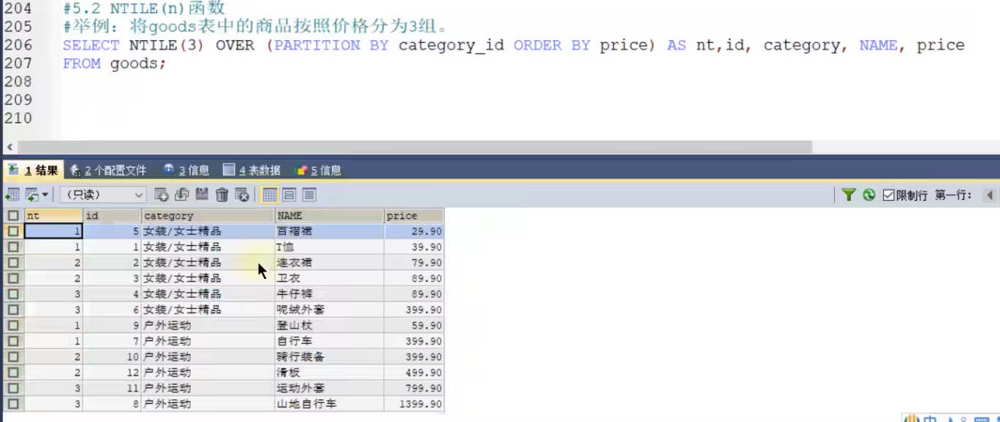
# 字符集的相关操作
# 修改 Mysql5.7 字符集
在 mysql8 之前，默认字符集为 latin1 ，utf8 字符集指向的是 utf8mb3 ，网站开发人员在数据库设计时往往会将编码修改为 utf8。如果遗忘修改默认的编码，就会出现乱码的问题。从 mysql8 开始，数据库默认的编码就是 utf8mb4，从而避免上述乱码的问题。
操作 1：查看默认使用的字符集
show variables like 'character%'; | |
或者 | |
show variables like '%char%'; |
操作 2：修改 my.cnf 配置文件，在配置文件中指定字符集
character_set_server=utf8 |
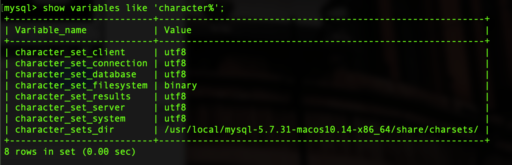
# 已有库已有表字符集的变更
mysql5.7 版本中，以前创建的库，创建的表字符集还是 latin1。
操作 1：修改已有数据库的字符集
alter database 数据库名 character set 'utf8'; |
操作 2：修改已有表的字符集
alter table 表名 convert to character set 'utf8'; |
# 各级别的字符集（底层原理说明）
mysql 有 4 个级别的字符集和比较规则，分别是：
- 服务器级别
- 数据库级别
- 表级别
- 列级别
- character_set_server：服务器级别的字符集
- character_set_database：当前数据库的字符集
- character_set_client：服务器解码请求时使用的字符集
- character_set_connection：服务器处理请求时会把请求字符串从 character_set_client 转为 character_set_connection
- character_set_result：服务器向客户端返回数据时使用的字符集
设置 server 服务器级别的字符集后，相应的 database 字符集也会跟着变化。
- 当创建数据库时，不指定字符集，则使用 database 指定的字符集
- 当创建表时不指定字符集，则会根据所在库的字符集默认指定
- 当创建字段不指定字符集时，则会根据所在表的字符集默认指定
# 字符集与比较规则
# utf8 与 utf8mb4
utf8 字符集表示一个字符需要使用 1-4 个字节，但是常使用的字符使用 1-3 个字节就可以表示了。而字符集表示一个字符所用到的最大字节长度，在某些方面会影响系统的存储和性能，所以定义了两个概念：
utf8mb3：阉割的 utf8 字符集，只使用 1-3 个字节表示字符。
utf8mb4：正宗的 utf8 字符集，使用 1-4 个字节表示字符。
查看 mysql 支持的字符集命令：show charset；
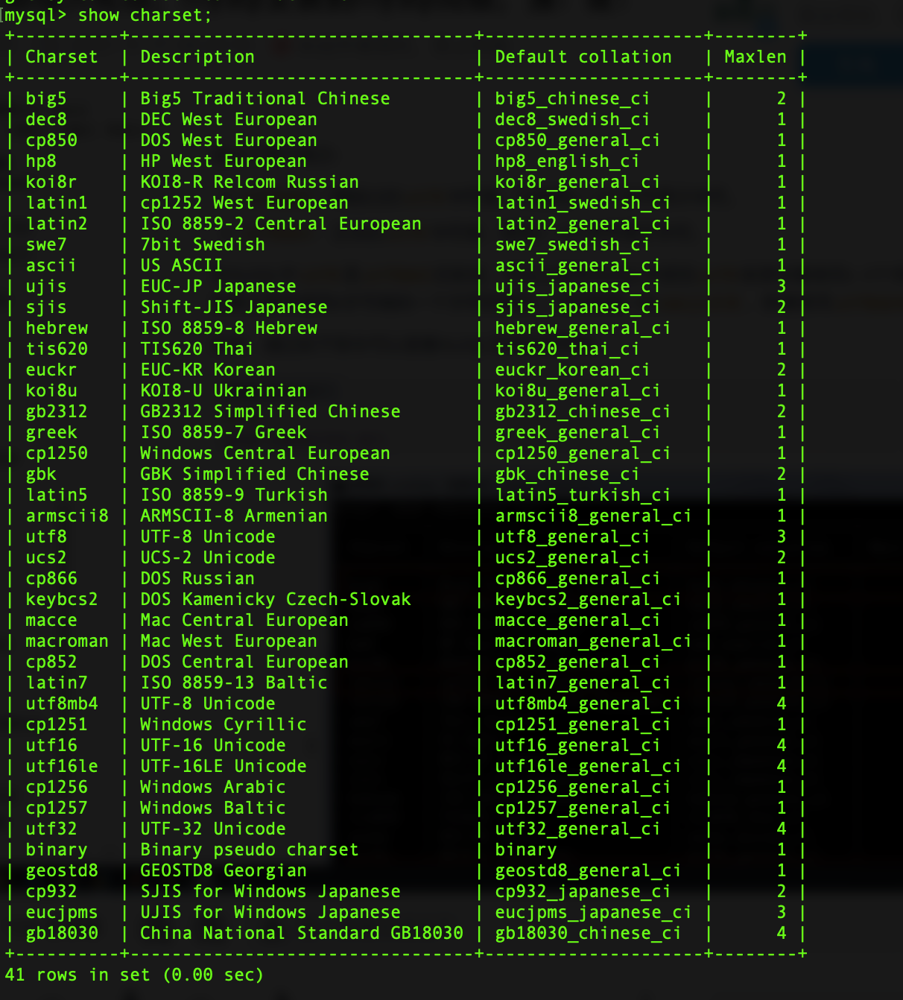
# 比较规则
Mysql 一共支持 41 种字符集，其中的 Default collation 表示这些字符集中一种默认的比较规则，里面包含着该比较规则主要作用于哪种语言。如 utf8_polish_ci 表示以波兰语的规则比较， utf8_general_ci 是一种通用的比较规则。
后缀表示该比较规则是否区分语言中的重音、大小写。具体如下：
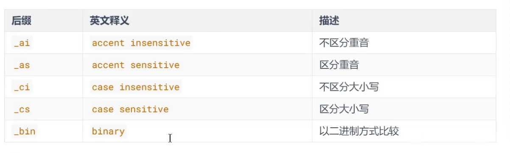
常用操作：
#查看 GBK 字符集的比较规则 | |
show COLLATION LIKE 'gbk%'; | |
#查看服务器的字符集和比较规则 | |
show VARIABLES LIKE '%_server'; | |
#查看数据库的字符集和比较规则 | |
show VARIABLES DATABASE LIKE '%_database'; | |
#查看具体数据库的字符集 | |
show CREATE DATABASE 数据库名; | |
#修改数据库的字符集 | |
ALTER DATABASE 数据库名 DEFAULT CHARACTER SET 'utf8' COLLATE 'utf8_general_ci'; | |
#查看具体表的字符集 | |
show CREATE TABLE 表名; | |
#修改表的字符集 | |
ALTER TABLE 数据库名 DEFAULT CHARACTER SET 'utf8' COLLATE 'utf8_general_ci'; |
# 请求到相应过程中的编码
客户端请求 mysql 服务器时使用 utf8 编码，服务器使用 character_set_client 设置的字符集进行解码，在使用 character_set_connection 设置的字符集把 character_set_client 解码的内容编码到数据库中去查询，查询结果后在使用 character_set_result 设置的字符集编码返回给客户端，客户端在解码。
所以要求设置的编码必须要一致，可以添加如下配置到配置文件里可以指定 character_set_client、character_set_connection、character_set_result 三者的字符集。
[client] | |
default-character-set=utf8 |
# SQL 大小写规范与 sql_mode 的设置
# 查看大小写设置命令
show variables like 'lower_case_table_names'; |
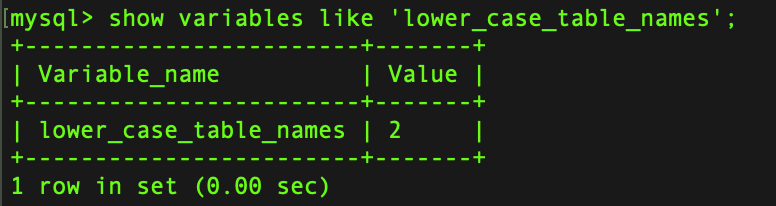
lower_case_table_names 参数值的设置：
- 默认为 0，大小写敏感
- 设置 1，大小写不敏感。创建的表，数据库都是以小写的形式存在磁盘上，对于 SQL 语句都是转换为小写对表和数据库进行查找。
- 设置为 2，创建的表和数据库依据语句上格式存放，凡是查找都是转换为小写进行。
# Linux 下大小写规则设置
当想设置大小写不敏感时，要在 my.cnf 配置文件中 [mysqld] 中加入 lower_case_table_names=1 ，然后重启服务器。
- 但是要在重启数据库实例之前就需要将原来的数据库和表转换为小写，否则将找不到数据库名。
- 此参数适用于 MYSQL5.7，在 Mysql8 下禁止在重新启动 Mysql 服务时将
lower_case_table_names设置成不同于初始化 mysql 服务时设置的lower_case_table_names值。如果非要将 mysql8 是设置为大小写不敏感，具体步骤为：- 停止 mysql 服务
- 删除数据目录，即删除 /var/lib/mysql 目录
- 在配置文件中添加
lower_case_table_names=1 - 重新启动 mysql 服务
# SQL 编写建议
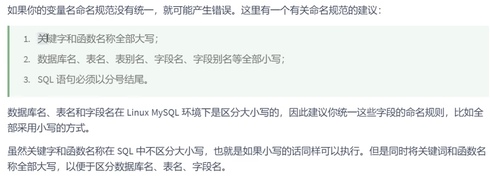
# sql_mode 的设置
sql_mode 会影响 mysql 支持的 sql 语法以及它执行的数据验证检查。通过设置 mysql_mode 可以完成不同严格程度的数据校验，有效的保证数据准确性。
MYSQL 服务器可以在不同的 SQL 模式下运行，并且可以针对不同的客户端以不同的方式应用这些模式，具体取决于 sql_mode 系统变量的值。
mysql5.6 和 5.7 默认的 sql_mode 模式参数是不一样的：
- 5.6 的 mode 默认值为空（即：NO_ENGINE_SUBSTITUTION），其实表示的是一个空值，相当于没有什么模式设置，可以理解为宽松模式。在这种设置下是可以允许一些非法操作的，比如允许一些非法数据的插入。
- 5.7 的 mode 是 STRICT_TRANS_TANLES，也就是严格模式，用于进行数据的严格校验，错误数据不能插入，报 error 错误，并且回滚事务。
# 宽松模式 vs 严格模式
宽松模式
如果设置的是宽松模式，那么在插入数据时，即使给了一个错误的数据，也可能会被接受，并且不会报错。
如：表中有一个 name 字段，类型为 char（10），在插入数据时长度超过了 10，例如‘1234567890abc’，超过了设定的长度，但不会报错，并且取前 10 个字符存上，也就是被存入了 1234567890，abc 忽略了。这就是宽松模式。
严格模式
严格模式上面的情况出现就会报错。
# 模式的查看和设置
select @@session.sql_mode | |
select @@global.sql_mode | |
#或者 | |
show variables like 'sql_mode'; | |
#设置 sql_mode 模式 | |
#session 只在当前会话中生效，关闭当前会话就不生效了。 | |
SET SESSION sql_mode = 想要的模式 | |
#GLOBLA 在当前服务生效，重启 mysql 服务后失效。 | |
SET GLOBAL sql_mode = 想要的模式 | |
#永久设置方式 | |
在my.cnf配置文件中配置sql_mode | |
[mysqld] | |
sql_mode = 想要的模式,可以选择多个模式，多个模式使用，分割。 |
# 常用模式
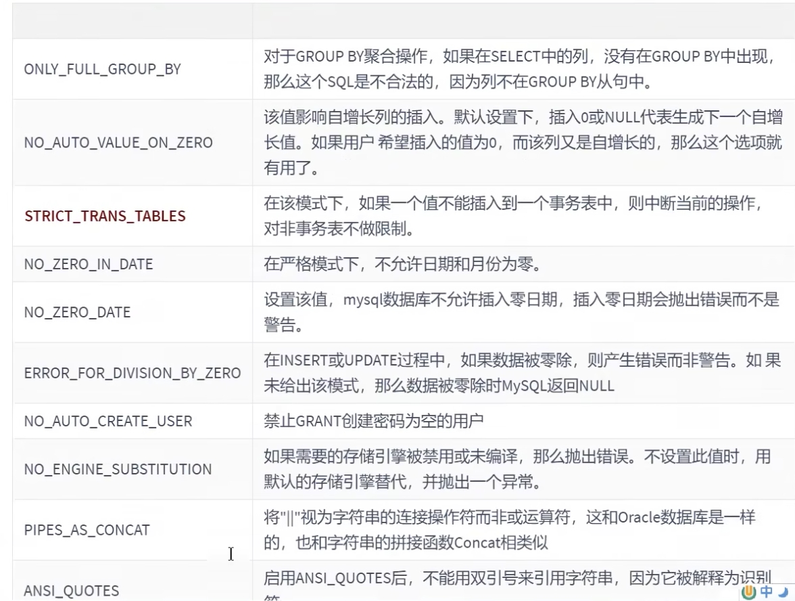
# 数据库和文件系统的关系
像 InnoDB、MyISAM 这样的存储引擎都是把表存储在磁盘上的，操作系统用来管理磁盘的结构被称为文件系统，所以用专业一点的话来表示就是：像 InnoDB、MyISAM 这样的存储引擎都是把表存储在文件系统上的， 读取数据 时， 存储引擎 会把数据从文件系统中读取出来返回， 写入数据 时，存储引擎会把数据 写到文件系统去 。
# 表在文件系统中的表示
# InnoDB 存储引擎模式
# 在 5.6.6 版本之前
进入 mysql 数据存储目录 data 下
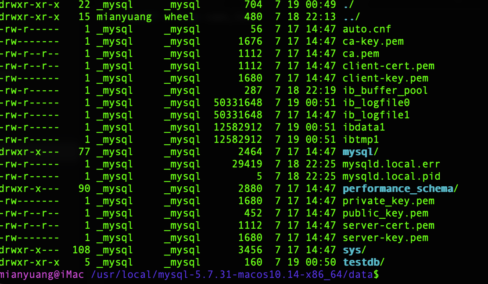
数据库表的数据都存放在 ibdata1 （称为系统表空间）中，进入创建的 testdb 数据库，可以看到：
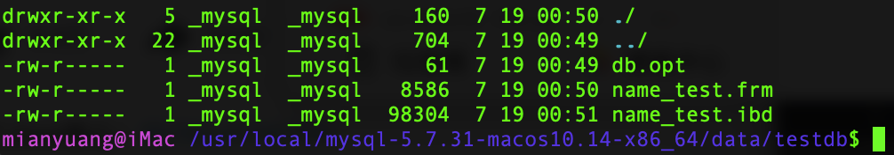
有三个文件：
db.opt存放的是创建数据库时数据库的配置信息__.frm文件存放的是创建表的结构__.ibd文件存放的是表的数据（也称为独立表空间）5.6.6 之前的版本应该是无。
# 在 5.7 版本
数据库表的数据可以选择存放在 ibdata1 （称为系统表空间）中，进入创建的 testdb 数据库，可以看到：
有三个文件：
db.opt存放的是创建数据库时数据库的配置信息__.frm文件存放的是创建表的结构__.ibd文件存放的是表的数据（也称为独立表空间）。
# 在 8 版本
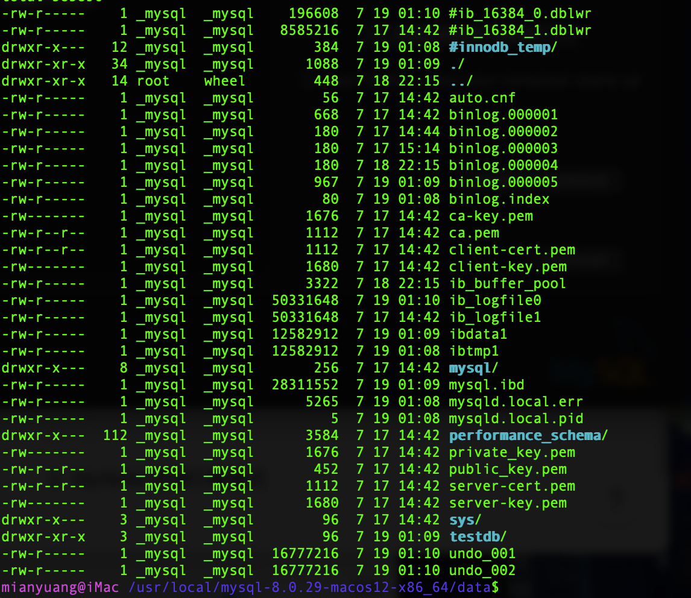
数据库表的数据可以选择存放在 ibdata1 （称为系统表空间）中，进入创建的 testdb 数据库，可以看到：
不同于 5.7 版本，现在只有一个 __.ibd （独立表空间）文件，不止是存放数据，把表结构也都放入该文件中。
储备知识：
- InnoDB 其实是使用
页作为基本单位来管理存储空间的，默认页的大小为 16kb。- 对于 InnoDB 存储引擎来说，每个索引都对应着一颗 B + 树，该 B + 树的每个节点都是一个数据页，数据页之间不必要是物理连续的，因为数据页之间有
双向链表来维护这些页的顺序- InnoDB 的聚簇索引的叶子节点存储了完整的用户记录，也就是所谓的索引即数据，数据即索引。
为了更好的管理这些页，InnoDB 提出了一个 表空间 或者 文件空间 概念。这个表空间是一个抽象的概念，它可以对应文件系统上一个或多个真实文件（不同表空间对应的文件数量可能不同）。每一个表空间都可以被划分为很多 页 ，我们的表数据就存放在某个表空间的某些页里。
表空间有几种个不同的类型：
# 系统表空间
默认情况下，InnoDB 会在数据目录下创建一个名为 ibdata1 ，大小为 12M 的文件，这个文件就是对应的 系统表空间 ，该文件是 自拓展文件 ，当不够用时会自动增加文件大小。
如果想让系统表空间对应文件系统上多个实际文件，那么可以在 mysql 启动配置对应的文件路径以及它们的大小。
修改 my.cnf 配置文件：
[server] | |
innodb_data_file_path=data1:512M;data2:512M:autoextend |
这样在 mysql 启动时就会创建这两个大小为 512M 大小的文件作为系统表空间，其中 autoextend 表明文件不够用时会自动拓展 data2 文件的大小。
需要注意的一点是： 在一个MYSQL服务器中，系统表空间只有一份。 从 MYSQL5.5.7 到 5.6.6 之间的各个版本中，我们表中的数据都会被默认存储到这个系统表空间。
# 独立表空间
在 mysql5.6.6 之后的版本中，InnoDB 并不会默认把各个表的数据存储到系统表空间中，而是 为每一个表创建一个独立表空间 ，也就是创建了多少个表，就有多少个独立表空间。使用独立表空间来存储数据，会在该表所属的数据库对应的目录下创建一个表示该独立表空间的文件，文件名和表名相同，只不过添加了一个 .ibd 的拓展名而已。
# 系统表空间与独立表空间的设置
可以指定使用 系统表空间 还是 独立表空间 来存储数据，这个功能由启动参数 innodb_file_per_table 控制。
[server] | |
innodb_file_per_table=0 #0 代表使用系统表空间 1 代表使用独立表空间 |
# 证明在 mysql8 中 idb 文件中存放了表的结构信息
需要解析 ibd 文件。可以使用 orancle 提供的一个应用程序 ibd2sdi。在 mysql8 中不需要下载此程序，自带。到存储 ibd 文件的目录下，执行下面的命令：
ibd2sdi --dump-file=student.txt student.ibd |
# MyISAM 存储引擎模式
# 表结构
在该存储引擎模式下，会在数据目录下对应的数据库目录下创建一个专门用来描述表结构的文件：表名 .frm
# 表中数据和索引
索引都是 二级索引 ，数据和索引是分开存放的。所以在文件系统中也是使用不同的文件来存储数据文件和索引文件，同时表数据都存放在对应的数据库子目录下。 例如 test 表使用 MyISAM 存储引擎的话，在数据库中对应的目录小爱就会创建这三个文件：
test.frm 存储表结构 5.7版本是这个文件 test.sdi 8版本是这个文件 | |
test.MYD 存储数据 | |
test.MYI 存储索引 |
# 用户与权限管理
# 用户管理
MYSQL 用户可以分为 普通用户 和 root用户 。root 用户是超级管理员，拥有所有权限，包括创建用户、删除用户、和修改用户密码等管理权限；普通用户只拥有被授予的各种权限。
Mysql 提供了许多语句来管理用户账号，这些语句可以用来登陆和退出 Mysql 服务器、创建用户、删除用户、密码管理和权限管理等内容。
MYSQL 数据库安全性需要通过账户管理来保证。
# 登陆 MYSQL 服务器
mysql -h hostname | hostIP -p port -u username -p |
# 创建用户
使用 CREATE USER 语句来创建新用户，必须拥有 CREATE USER 权限。每增加一个用户，都会往 MYSQL.user 表中添加一条记录，但新创建的用户没有任何权限。添加的账户已经存在，会返回一个错误。
语法格式如下：
用户名由用户 (User) 和主机名 (Host) 构成
CREATE USER 用户名 [IDENTIFIED BY '密码'][,用户名[IDENTIFIED BY '密码']] | |
CREATE USER 'zhangsan'@'localhost' IDENTIFIED BY '123456'; |
# 修改用户
修改用户名：
UPDATE mysql.user set USER='li4' WHERE USER='wang5'; | |
// 在刷新一下 不然之前的没修改的账户还能登陆 | |
FLUSH PRIVILEGES; |
# 删除用户
使用 DROP USER 语句来删除 普通用户 ，也可以直接在 mysql.user 表中删除用户。
DROP USER 用户名 | |
DROP USER 'lisi'@'%'; |
# 设置当前用户密码
适用于 root 用户修改自己的密码，以及普通用户登陆后修改自己的密码。
推荐使用 ALTER USER 修改用户密码
旧的写法：
SET PASSWORD = PASSWORD('123456'); |
推荐写法：
使用 ALTER 命令来修改自身密码，如下命令修改当前登陆用户的密码。
#ALTER USER 写法 | |
ALTER USER USER(用户) IDENTIFIED BY ‘新密码’； |
使用 SET 语句来修改当前用户密码
使用 root 用户登陆后，可以使用 SET 语句来修改密码，如下：
SET PASSWORD = ‘新密码’ |
# 修改其他用户的密码
root 用户不仅可以修改自己的密码，还可以修改其他普通用户的密码。root 登陆 mysql 服务器后，可以通过 ALTER 语句和 SET 语句来修改普通用户的密码。
- 使用 ALTER 语句来修改普通用户的密码
ALTER USER user [IDENTIFIED BY ‘新密码’]
例子如下：
ALTER USER 'lisi'@'localhost' IDENTIFIED BY 'hello';
- 使用 SET 命令来修改普通用户密码
SET PASSWORD FOR 'username'@'hostname'='新密码'
# 权限管理
查看 mysql 所有权限。
show privileges; |
CREATE 和 DROP 权限，可以创建新的数据库和表，或删除已有的数据库和表。
SELECT、ISNERT、UPDATE、DELETE 权限允许在一个数据库现有的表上实施操作。
SELECT 权限只有在它们真正从一个表中检索行时才被用到。
INDEX 权限允许创建或删除索引，INDEX 适用于已有的表。
ALTER 权限可以使用 ALTER TABLE 来更改表的结构和重新命名表。
CREATE ROUTINE 权限用来创建保存的程序（函数和程序）ALTER ROUTINE 权限用来更改和删除保存的程序，EXECUTE 权限用于执行保存的程序。
GRANT 权限允许授权给其他用户，可用于数据库、表和保存的程序。
FILE 权限使用户可以使用 LOAD DATA INFILE 和 SELECT ...INTO OUTFILE 语句读或写服务器上的文件，任何被授权 FILE 权限的用户都能读或者写 MYSQL 服务器上的任何文件。
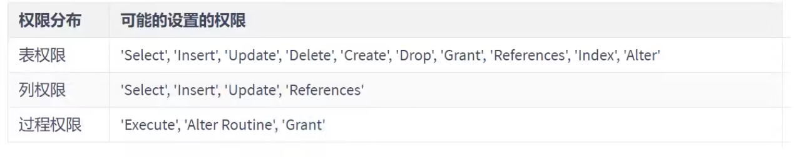
授予权限原则
- 只授予能满足需要的最小权限，防止用户干坏事。比如用户只是需要查询，那就只给 select 权限就可以了。
- 创建用户的时候限制用户的登录主机，一般是限制成指定 Ip 或者内网 IP 段。
- 为每个用户设置满足密码复杂度的密码。
- 定期清理不需要的用户，回收权限或者删除用户。
授予权限
给用户授予权限有两种方式，分别是通过把角色赋予用户给用户授权和直接给用户授权。
授权命令：
GRANT 权限1.....权限n ON 数据库名称.表名称 TO 用户名@用户地址 [IDENTIFIED BY '密码口令'];
例子：
给li4用户授予test库下所有表的CRUD权限
GRANT SELECT,INSERT,DELETE,UPDATE ON TEST.* TO li4@localhost;
授予joe用户对所有库所有表的全部权限，不包括grant权限。GRANT ALL PRIVILEGES ON *.* TO joe@'%';
查看权限
- 查看当前用户权限
SHOW GRANTS;
SHOW GRANTS FOR CURRENT_USER;
SHOW GRANTS FOR CURRENT_USER();
- 查看某用户的全局权限
SHOW GRANTS FOR ‘user’@'主机地址';
收回权限
使用 REVOKE 语句来收回权限。
收回权限命令
REVOKE 权限1.....权限n ON 数据库名.表名 FROM 用户名@用户地址;
# 权限表
MYSQL 通过 权限表来控制用户对数据库的访问 ，权限表放在 mysql 数据库中。mysql 数据库系统会根据这些权限表的内容为每个用户赋予相应的权限。这些权限表中最重要的是 user 表、db 表。除此之外，还有 table_priv 表、collumn_priv 表和 proc_priv 表。在 Mysql 启动时，服务器将这些数据库表中权限信息的内容读人内存。
# 角色管理
角色是在 8 版本引入的新功能。在 MYSQL 中，角色是权限的集合，可以为角色添加或移除权限。用户可以被赋予角色，同时也被授予角色包含的权限。对角色进行操作需要较高的权限。并且像账户一样，角色可以拥有授予和撤销的权限。
# 角色创建
使用 CREATE ROLE 语句，创建角色
CREATE ROLE 'role_name'[@'host_name'] [,'role_name'[@'host_name']] |
角色名称规则和用户类似，如果 host_name 省略，默认为 "%"，role_name 不可省略。
# 角色赋予权限
语法格式如下：
GRANT privileges ON db_name.table_name TO 'role_name'[@'host_name']; |
privileges 代表权限的名称，多个权限以逗号隔开。可使用 SHOW 语句查询权限名称。SHOW PRIVILEGES\G 命令
# 查看角色权限
语法格式如下：
SHOW GRANTS FOR '角色名'; |
# 回收角色权限
语法格式如下：
REVOKE privileges ON db_name.table_name FROM ‘rolename’； | |
例如:撤销school_write角色插入、查询、更新在school数据库所有表的权限。 | |
REVOKE INSERT,SELECT,UPDATE ON school.* FROM 'school_write'@'localhost'; |
# 删除角色
语法格式：
DROP ROLE role ,[role2].... |
# 给用户赋予角色
语法格式：
GRANT role,... TO user [,user2,...]; |
role 代表角色， user 代表用户。可以将多个角色同时赋予多个用户。
# 激活角色
MYSQL 创建了角色后，默认都是没有激活的，也就是不能用的。必须要手动激活才能使用。用户才能拥有该角色的对应的权限。
激活方式 1
使用 set default role 命令激活角色
SET DEFAULT role 角色 ALL TO 用户
举例：为下面4个用户默认激活所有已拥有的角色：SET DEFAULT role 'manager'@'localhost' ALL TO 'dev'@'localhost','dev1'@'%',...
激活方式 2
将 activate_all_roles_on_login 设置为 ON
SET GLOBAL activate_all_roles_on_login = ON；
意思是对所有角色永久激活。运行这条语句后，用户才真正拥有了赋予角色的所有权限。
# 撤销用户的角色
语法格式：
REVOKE role FROM user； | |
举例：撤销admin用户read角色 | |
REVOKE read FROM 'admin'@'localhost'; |
# MYSQL 逻辑架构
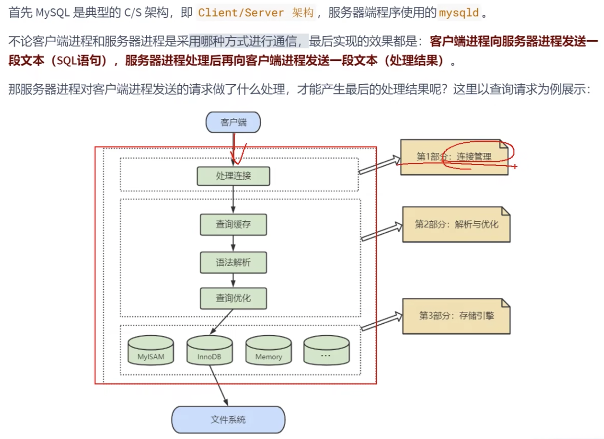
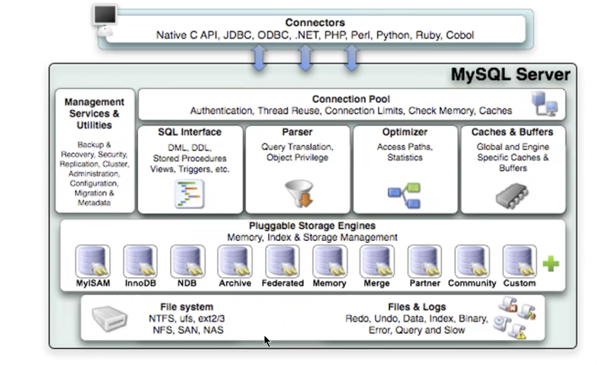
# MYSQL Server 结构可以分为三层结构：
# 第一层：连接层
（系统）客户端访问 MYSQL 服务器前，做的第一件事就是建立 TCP 连接。
经过三次握手建立连接后，MYSQL 服务器对 TCP 传输过来的账号密码进行身份认证、权限获取。
一个系统只会和 MYSQL 服务器建立一次连接吗？只能有一个系统和 MYSQL 进行连接吗？
当然不是，多个系统都可以和 MYSQL 服务器进行连接，每个系统可以建立多个连接。为了解决创建与 TCP 频繁创建销毁带来的资源耗尽、性能下降问题。mysql 服务器里有专门的 TCP连接池 限制连接数，采用 长连接模式 复用 TCP 连接。
# 第二层：服务层
第二层架构是核心服务层，很多核心功能放在这里。如 SQL 接口，并完成缓存查询，SQL 的分析和优化及部分内置函数的执行。所有跨存储引擎的功能也在这一层实现，如过程、函数等。
在该层，服务器会 解析查询 并创建相应的内部 解析树 ，并对其完成相应的 优化 ：如确定查询表的顺序，是否利用索引等，最后生成相应的执行操作。
如果是 SELECT 语句，服务器还会 查询内部缓存 。如果缓存空间足够大，这样在解决大量读操作的环境中能够很好的提升系统的性能。
SQL Interface：SQL 接口
接收用户的 SQL 命令，并且返回用户需要查询的结果。
Mysql 支持 DML、DDL、存储过程、视图、触发器、自定义函数等多种 SQL 语言接口
Parser：解析器
在解析器中对 SQL 语句进行语法分析、语义分析。将 SQL 语句分解成数据结构，并且将这个结构传递到后续步骤，以后 SQL 语句的传递和处理就是基于这个结构的。
在 SQL 命令传递到解析器的时候会被解析器验证和分析，并为其创建
语法树，并根据数据字段丰富查询语法树，会验证该客户端是否具有执行该查询的权限。创建好语法树之后，MYSQL 还会对 SQL 查询进行语法上的优化，进行查询重写。Optimizer：查询优化器
SQL 语句在语法解析之后，插叙之前会使用查询优化器确定 SQL 语句的执行路径，生成一个执行计划。
这个执行计划表明应该使用
哪些索引进行查询（全表检索还是使用索引检索），表之间的连接顺序如何，最后会按照执行计划中的步骤调用存储引擎提供的方法来真正的执行查询，并将查询结果返回给用户。它使用
选取-投影-连接策略进行查询。例如：
select id，name from student where gender = '女'
这个查询语句会先根据。WHERE 条件进行
选取，而不是将全部查询出来后再进行 gender 过滤。这个查询会先根据 id 和 name 来进行投影，而不是将属性全部取出来后再进行过滤，将这两个查询条件
连接起来生成最终结果。Caches & Buffer：查询缓存组件
MYSQL 内部维持着一些 Caches & Buffer，比如 QUery Cache 用来缓存一条 SELECT 语句的执行结果，如果能够在其中找到对应的查询结果，那么就没必要在进行查询解析，优化和执行的整个过程，直接将结果返回给用户。
在 8 中已经删除。
# 第三层：引擎层
存储引擎在 MYSQL 架构中是一个插件式的存储引擎，可以根据业务的不同选择不同的存储引擎，也可以选择自己设置的存储引擎。
插件式存储引擎，真正负责了 MYSQL 中数据的存储和提取，对物理服务器级别维护的底层数据执行操作，服务器通过 API 与存储引擎进行通信。不同的存储引擎具有的功能不同，可以根据需求进行选取。
# SQL 执行流程
mysql 中 SQL 执行流程
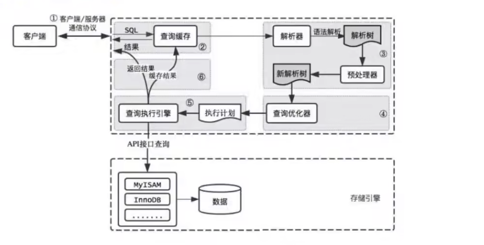
# 存储引擎
# InnoDB 引擎：具备外建支持功能的事务存储引擎
- InnoDB 是 mysql 的默认事务性引擎，它被设计用来处理大量的短期事务。可以确保事务的完整提交和回滚。
- 除了增加和查询外，还需要更新、删除操作，那么，应优先选择 InnoDB 存储引擎。
InnoDB是为处理巨大数据量的最大性能设计。- 对比 MyISAM 存储引擎，
InnoDb写的处理效率差一些，并且会占用更多的磁盘空间以保存数据和索引。 - MyISAM 只缓存索引，不缓存真实数据；InnoDB 不仅仅缓存索引还要缓存真实数据，对
内存要求较高，而且内存大小对性能有决定性的影响。
# MyISAM 引擎：主要的非事务处理存储引擎
- 提供了大量的特性，包括全文索引、压缩、空间函数等，但
MyISAM不支持事务、行级锁、外建。有一个毫无疑问的缺陷就是崩溃后无法安全恢复。 - 优势是访问的
速度快，对事务完整性没有要求，主要以 SELECT、INSERT 为主。 - 针对数据统计有额外的常数存储。所以 count (*) 查询效率高。
- 应用场景：只读应用或者以读为主的应用
# 索引
索引是帮助 MYSQL 高效获取数据的排好序的数据结构。
索引是在存储引擎中实现的 ，因此每种存储引擎的索引不一定完全相同，并且每种存储引擎不一定支持所有索引类型。同时，存储引擎可以定义每个表的 最大索引数 和 最大索引长度 。所有存储引擎支持每个表至少 16 个索引，总索引长度至少为 256 字节。
优点
- 提高查询效率
- 通过创建唯一索引，可以保证数据库表中每一行数据的唯一性。
- 在实现数据的参考完整性方面，可以
加速表和表之间的连接。换句话说，对于有依赖关系的父子表和父表联合查询时，可以提高查询速度。 - 在使用分组和排序子句进行数据查询时，可以
显著减少查询中分组和排序时间，降低 CPU 消耗。
缺点
- 创建索引和维护索引要
耗费时间，随着数据量的增加，所耗费的时间也会增加。 - 索引需要占
据磁盘空间，除了数据表占数据空间之外，每一个索引还要占一定的物理空间，存储在磁盘上，如果有大量的索引，索引文件可能比数据文件更快达到最大文件尺寸。 降低更新表的速度。当对表进行增加、更新和删除时，索引也需要动态维护，这样就降低了数据的维护速度。
# InnoDB 中索引的推演
# 索引之前的查找
先来看一个精确匹配的例子：
SELECT [列名列表] FROM 表名 WHERE 列名 = xxx; |
在一个页中查找
假设目前表中的记录比较少，所有的记录都可以被存放到一个页中，在查找记录的时候可以根据搜索条件的不同分为两种情况：
以主键为搜索条件
可以在页目录中使用
二分法快速定位到对应的槽，然后再遍历该槽对用分组中的记录即可快速找到指定记录。以其他列作为搜索条件
因为在数据页中并没有对非主键列简历所谓的页目录，所以我们无法通过二分法快速定位相应的槽。这种情况下只能从
最小记录开始依次遍历单链表中的每条记录， 然后对比每条记录是不是符合搜索条件。很显然，这种查找的效率是非常低的。
在很多页中查找
在很多页中查找记录的活动可以分为两个步骤：
- 定位到记录所在的页
- 从所在的页内中查找相应的记录
在没有索引的情况下，不论是根据主键列或者其他列的值进行查找，由于我们并不能快速的定位到记录所在的页，所以只能 从第一个页沿着双向链表 一直往下找，在每一个页中根据我们上面的查找方式去查 找指定的记录。因为要遍历所有的数据页，所以这种方式显然是 超级耗时 的。如果一个表有一亿条记录呢？此时 索引 应运而生。
# 设计索引
建一个表：
mysql> CREATE TABLE index_demo( | |
-> c1 INT, | |
-> c2 INT, | |
-> c3 CHAR(1), | |
-> PRIMARY KEY(c1) | |
-> ) ROW_FORMAT = Compact; |
这个新建的 index_demo 表中有 2 个 INT 类型的列，1 个 CHAR (1) 类型的列，而且我们规定了 c1 列为主键， 这个表使用 Compact 行格式来实际存储记录的。这里我们简化了 index_demo 表的行格式示意图：
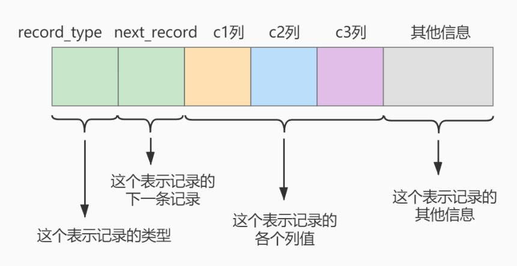
我们只在示意图里展示记录的这几个部分：
- record_type ：记录头信息的一项属性，表示记录的类型， 0 表示普通记录、 2 表示最小记 录、 3 表示最大记录、 1 暂时还没用过，下面讲。
- mysql> CREATE TABLE index_demo (-> c1 INT, -> c2 INT, -> c3 CHAR (1), -> PRIMARY KEY (c1) -> ) ROW_FORMAT = Compact; next_record ：记录头信息的一项属性，表示下一条地址相对于本条记录的地址偏移量，我们用 箭头来表明下一条记录是谁。
- 各个列的值 ：这里只记录在 index_demo 表中的三个列，分别是 c1 、 c2 和 c3 。
- 其他信息 ：除了上述 3 种信息以外的所有信息，包括其他隐藏列的值以及记录的额外信息。
将记录格式示意图的其他信息项暂时去掉并把它竖起来的效果就是这样：
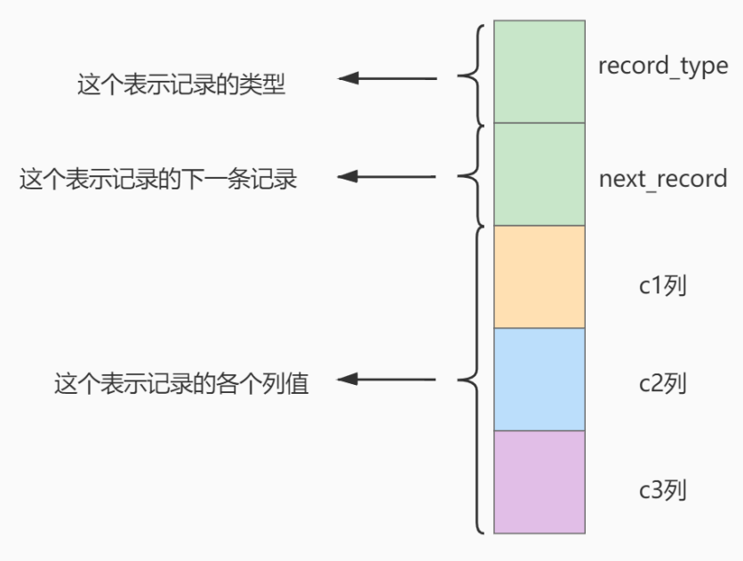
把一些记录放到页里的示意图就是：
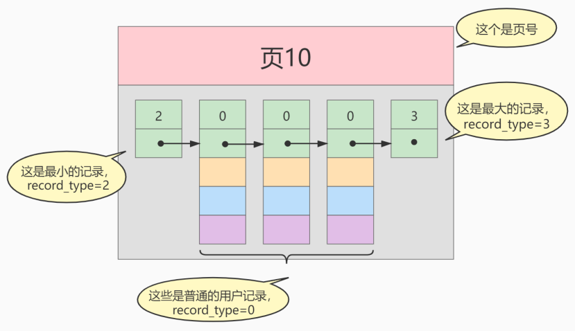
# 一个简单的索引设计方案
我们在根据某个搜索条件查找一些记录时为什么要遍历所有的数据页呢？因为各个页中的记录并没有规律，我们并不知道我们的搜索条件匹配哪些页中的记录，所以不得不依次遍历所有的数据页。所以如果我们 想快速的定位到需要查找的记录在哪些数据页 中该咋办？我们可以为快速定位记录所在的数据页而建立一个目录 ，建这个目录必须完成下边这些事：
下一个数据页中用户记录的主键值必须大于上一个页中用户记录的主键值。
假设：每个数据结构最多能存放 3 条记录（实际上一个数据页非常大，可以存放下好多记录）。
INSERT INTO index_demo VALUES(1, 4, 'u'), (3, 9, 'd'), (5, 3, 'y'); |
那么这些记录以及按照主键值的大小串联成一个单向链表了，如图所示：
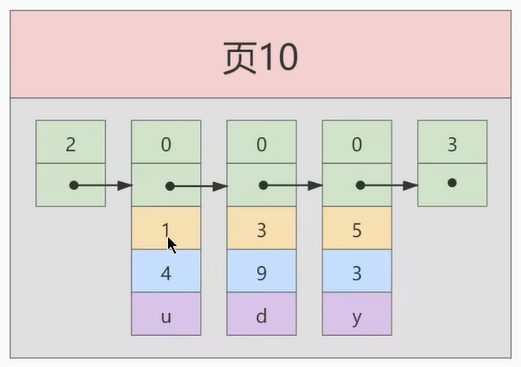
从图中可以看出来， index_demo 表中的 3 条记录都被插入到了编号为 10 的数据页中了。此时我们再来插入一条记录
INSERT INTO index_demo VALUES(4, 4, 'a'); |
因为 页 10 最多只能放 3 条记录，所以我们不得不再分配一个新页：
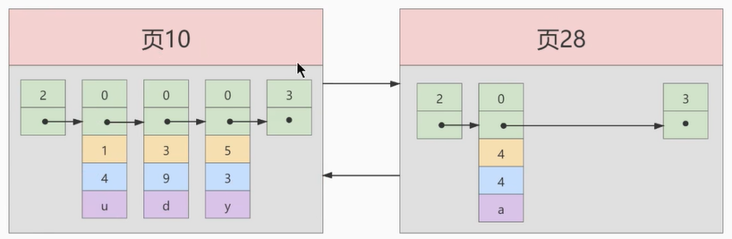
注意：新分配的 数据页编号可能并不是连续的。它们只是通过维护者上一个页和下一个页的编号而建立了 链表 关系。另外，页 10 中用户记录最大的主键值是 5，而页 28 中有一条记录的主键值是 4，因为 5>4，所以这就不符合下一个数据页中用户记录的主键值必须大于上一个页中用户记录的主键值的要求，所以在插入主键值为 4 的记录的时候需要伴随着一次 记录移动，也就是把主键值为 5 的记录移动到页 28 中，然后再把主键值为 4 的记录插入到页 10 中，这个过程的示意图如下：
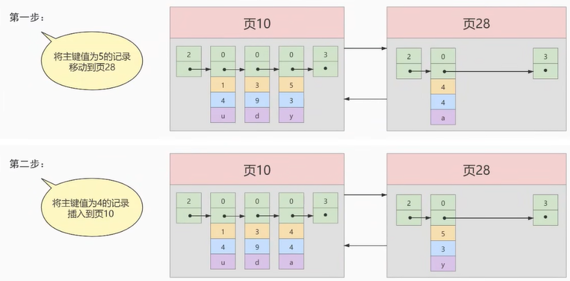
这个过程表明了在对页中的记录进行增删改查操作的过程中，我们必须通过一些诸如 记录移动 的操作来始终保证这个状态一直成立：下一个数据页中用户记录的主键值必须大于上一个页中用户记录的主键值。这个过程称为 页分裂。
# 给所有的页建立一个目录项
由于数据页的 编号可能是不连续 的，所以在向 index_demo 表中插入许多条记录后，可能是这样的效果：
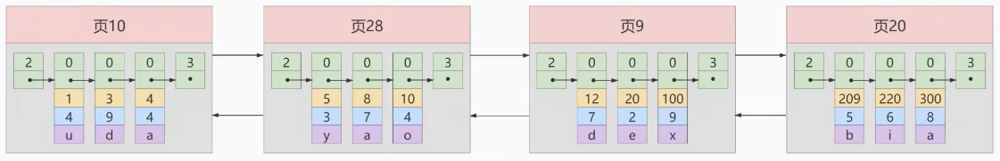
我们需要给它们做个 目录，每个页对应一个目录项，每个目录项包括下边两个部分：
1）页的用户记录中最小的主键值，我们用 key 来表示。
2）页号，我们用 page_on 表示。
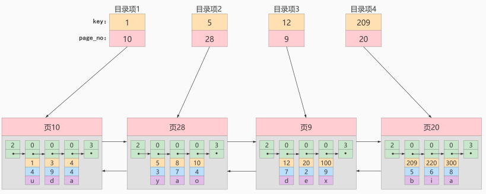
以 页 28 为例，它对应 目录项 2 ，这个目录项中包含着该页的页号 28 以及该页中用户记录的最小主 键值 5 。我们只需要把几个目录项在物理存储器上连续存储（比如：数组），就可以实现根据主键 值快速查找某条记录的功能了。比如：查找主键值为 20 的记录，具体查找过程分两步：
- 先从目录项中根据 二分法 快速确定出主键值为 20 的记录在 目录项 3 中（因为 12 < 20 < 209 ），它对应的页是 页 9 。
- 再根据前边说的在页中查找记录的方式去 页 9 中定位具体的记录。
至此，针对数据页做的简易目录就搞定了。这个目录有一个别名，称为 索引 。
# InnoDB 中的索引方案
① 迭代 1 次：目录项纪录的页
InnoDB 怎么区分一条记录是普通的 用户记录 还是 目录项记录 呢？使用记录头信息里的 record_type 属性，它的各自取值代表的意思如下：
- 0：普通的用户记录
- 1：目录项记录
- 2：最小记录
- 3：最大记录
我们把前边使用到的目录项放到数据页中的样子就是这样：
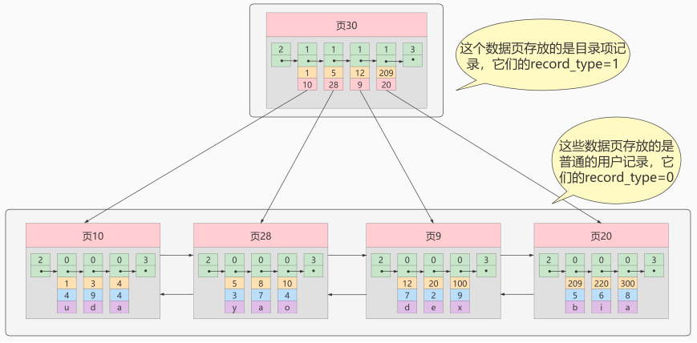
从图中可以看出来，我们新分配了一个编号为 30 的页来专门存储目录项记录。这里再次强调 目录项记录 和普通的 用户记录 的不同点：
- 目录项记录 的 record_type 值是 1，而 普通用户记录 的 record_type 值是 0。
- 目录项记录只有 主键值和页的编号 两个列，而普通的用户记录的列是用户自己定义的，可能包含 很多列 ，另外还有 InnoDB 自己添加的隐藏列。
- 了解：记录头信息里还有一个叫 min_rec_mask 的属性，只有在存储 目录项记录 的页中的主键值最小的 目录项记录 的 min_rec_mask 值为 1 ，其他别的记录的 min_rec_mask 值都是 0 。
相同点：两者用的是一样的数据页，都会为主键值生成 Page Directory （页目录），从而在按照主键值进行查找时可以使用 二分法 来加快查询速度。
现在以查找主键为 20 的记录为例，根据某个主键值去查找记录的步骤就可以大致拆分成下边两步：
- 先到存储 目录项记录 的页，也就是页 30 中通过 二分法 快速定位到对应目录项，因为 12 < 20 < 209 ，所以定位到对应的记录所在的页就是页 9。
- 再到存储用户记录的页 9 中根据 二分法 快速定位到主键值为 20 的用户记录。
② 迭代 2 次：多个目录项纪录的页
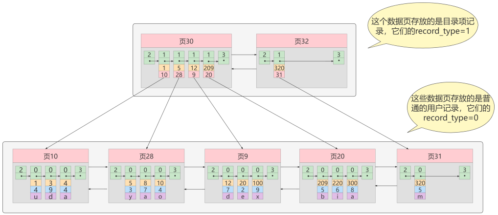
从图中可以看出，我们插入了一条主键值为 320 的用户记录之后需要两个新的数据页：
- 为存储该用户记录而新生成了 页 31 。
- 因为原先存储目录项记录的 页 30 的容量已满 （我们前边假设只能存储 4 条目录项记录），所以不得 不需要一个新的 页 32 来存放 页 31 对应的目录项。
现在因为存储目录项记录的页不止一个，所以如果我们想根据主键值查找一条用户记录大致需要 3 个步骤，以查找主键值为 20 的记录为例：
- 确定 目录项记录页 我们现在的存储目录项记录的页有两个，即 页 30 和 页 32 ，又因为页 30 表示的目录项的主键值的 范围是 [1, 320) ，页 32 表示的目录项的主键值不小于 320 ，所以主键值为 20 的记录对应的目 录项记录在 页 30 中。
- 通过目录项记录页 确定用户记录真实所在的页 。 在一个存储 目录项记录 的页中通过主键值定位一条目录项记录的方式说过了。
- 在真实存储用户记录的页中定位到具体的记录。
③ 迭代 3 次：目录项记录页的目录页
如果我们表中的数据非常多则会 产生很多存储目录项记录的页 ，那我们怎么根据主键值快速定位一个存储目录项记录的页呢？那就为这些存储目录项记录的页再生成一个 更高级的目录 ，就像是一个多级目录一样， 大目录里嵌套小目录 ，小目录里才是实际的数据，所以现在各个页的示意图就是这样子：
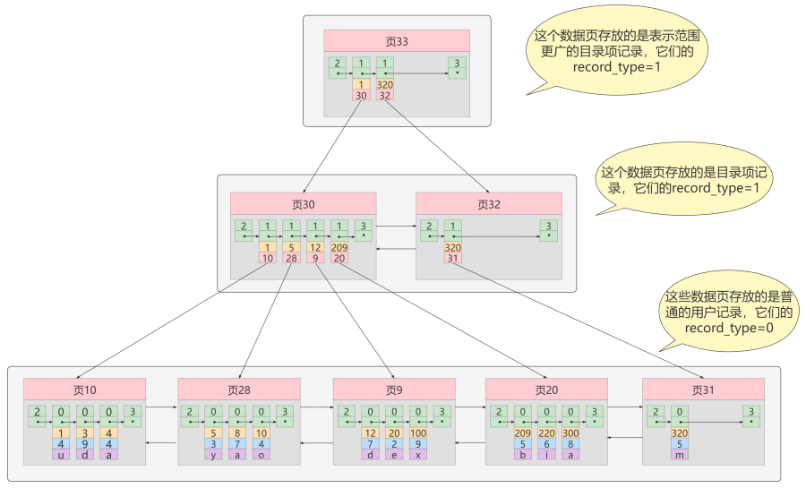
如图，我们生成了一个存储更高级目录项的 页 33 ，这个页中的两条记录分别代表页 30 和页 32，如果用 户记录的主键值在 [1, 320) 之间，则到页 30 中查找更详细的目录项记录，如果主键值 不小于 320 的 话，就到页 32 中查找更详细的目录项记录。
我们可以用下边这个图来描述它：
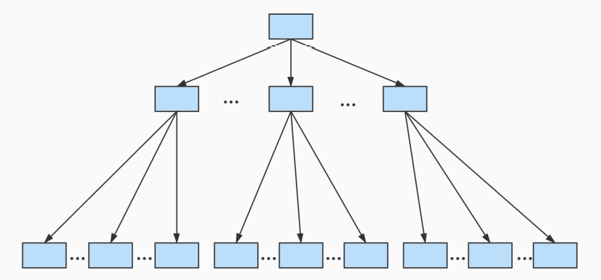
这个数据结构，它的名称是 B + 树 。
④ B+Tree
一个 B + 树的节点其实可以分成好多层，规定最下边的那层，也就是存放我们用户记录的那层为第 0 层， 之后依次往上加。之前我们做了一个非常极端的假设：存放用户记录的页 最多存放 3 条记录 ，存放目录项 记录的页 最多存放 4 条记录 。其实真实环境中一个页存放的记录数量是非常大的，假设所有存放用户记录 的叶子节点代表的数据页可以存放 100 条用户记录 ，所有存放目录项记录的内节点代表的数据页可以存 放 1000 条目录项记录 ，那么：
- 如果 B + 树只有 1 层，也就是只有 1 个用于存放用户记录的节点，最多能存放 100 条记录。
- 如果 B + 树有 2 层，最多能存放 1000×100=10,0000 条记录。
- 如果 B + 树有 3 层，最多能存放 1000×1000×100=1,0000,0000 条记录。
- 如果 B + 树有 4 层，最多能存放 1000×1000×1000×100=1000,0000,0000 条记录。相当多的记录！
你的表里能存放 100000000000 条记录吗？所以一般情况下，我们用到的 B + 树都不会超过 4 层 ，那我们通过主键值去查找某条记录最多只需要做 4 个页面内的查找（查找 3 个目录项页和一个用户记录页），又因为在每个页面内有所谓的 Page Directory （页目录），所以在页面内也可以通过 二分法 实现快速 定位记录。
# 常见索引概念
索引按照物理实现方式，索引可以分为 2 种： 聚簇（聚集） 和 非聚簇（非聚集）索引 ， 非聚簇（非聚集）索引 也称为 二级索引或者辅助索引 。
# 聚簇索引
聚簇索引 并不是一种单独的索引类型，而是 一种数据存储方式 （所有的用户记录都存储在叶子节点），也就是所谓的 索引即数据，数据即索引 。
聚簇 表示数据行和相邻的键值聚簇的存储在一起。
特点：
使用记录主键值的大小进行记录和页的排序，这包括三个方面的含义：
页内的记录是按照主键的大小顺序排成一个单向链表。- 各个存放
用户记录的页也是根据页中用户记录的主键大小顺序排成一个双向链表。 - 存放
目录项记录的页分为不同的层次，在同一层次中的页也是根据页中目录项记录的主键大小顺序排成一个双向链表。
B + 树的 叶子节点 存储的是完整的用户记录。
所谓完整的用户记录，就是指这个记录中存储了所有列的值（包括隐藏列）。
我们把具有这两种特性的 B + 树称为聚簇索引，所有完整的用户记录都存放在这个 聚簇索引 的叶子节点处。这种聚簇索引并不需要我们在 MySQL 语句中显式的使用 INDEX 语句去创建， InnDB 存储引擎会 自动 的为我们创建聚簇索引。
优点：
数据访问更快，因为聚簇索引将索引和数据保存在同一个 B + 树中，因此从聚簇索引中获取数据比非聚簇索引更快- 聚簇索引对于主键的
排序查找和范围查找速度非常快 - 按照聚簇索引排列顺序，查询显示一定范围数据的时候，由于数据都是紧密相连，数据库不用从多 个数据块中提取数据，所以
节省了大量的io操作。
缺点：
插入速度严重依赖于插入顺序，按照主键的顺序插入是最快的方式，否则将会出现页分裂，严重影响性能。因此，对于 InnoDB 表，我们一般都会定义一个自增的ID列为主键更新主键的代价很高，因为将会导致被更新的行移动。因此，对于 InnoDB 表，我们一般定义主键为不可更新二级索引访问需要两次索引查找，第一次找到主键值，第二次根据主键值找到行数据
# 二级索引（辅助索引、非聚簇索引）
如果我们想以别的列作为搜索条件该怎么办？肯定不能是从头到尾沿着链表依次遍历记录一遍。
答案：我们可以 多建几颗B+树 ，不同的 B + 树中的数据采用不同的排列规则。比方说我们用 c2 列的大小作为数据页、页中记录的排序规则，再建一课 B + 树，效果如下图所示：
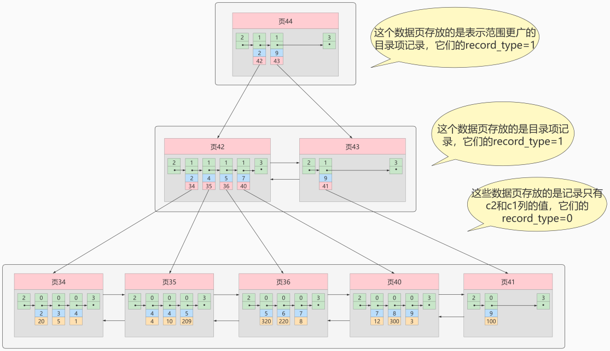
这个 B + 树与上边介绍的聚簇索引有几处不同：
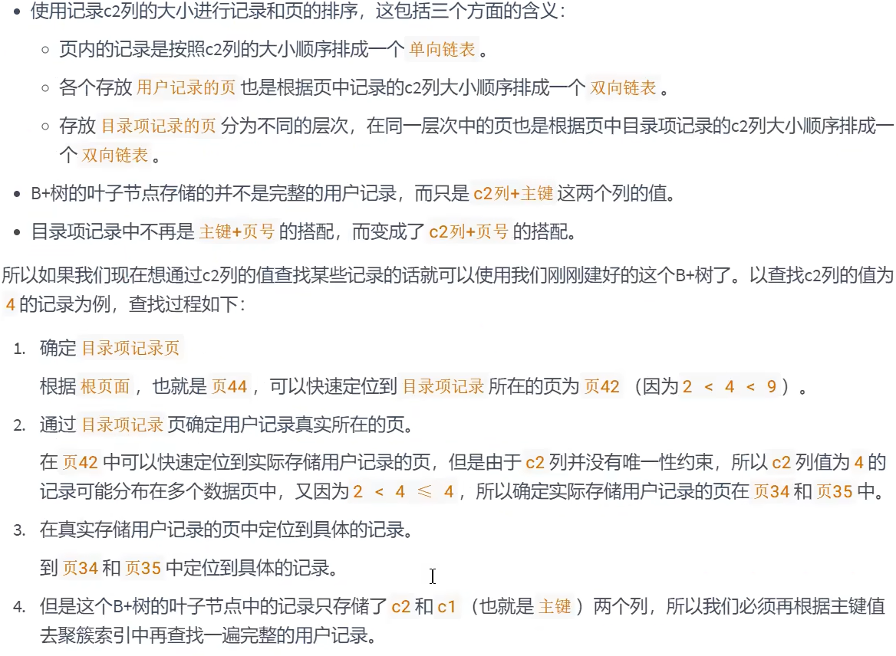
# 回表概念
我们根据这个以 c2 列大小排序的 B + 树只能确定我们要查找记录的主键值，所以如果我们想根 据 c2 列的值查找到完整的用户记录的话，仍然需要到 聚簇索引 中再查一遍，这个过程称为 回表 。也就 是根据 c2 列的值查询一条完整的用户记录需要使用到 2 棵 B + 树！
问题：为什么我们还需要一次 回表 操作呢？直接把完整的用户记录放到叶子节点不 OK 吗？
回答：
如果把完整的用户记录放到叶子结点是可以不用回表。但是 太占地方 了，相当于每建立一课 B + 树都需要把所有的用户记录再都拷贝一遍，这就有点太浪费存储空间了。
因为这种按照 非主键列 建立的 B + 树需要一次回表操作才可以定位到完整的用户记录，所以这种 B + 树也被称为 二级索引 ，或者辅助索引。由于使用的是 c2 列的大小作为 B + 树的排序规则，所以我们也称这个 B + 树为 c2 列简历的索引。
非聚簇索引的存在不影响数据在聚簇索引中的组织，所以一张表可以有多个非聚簇索引。
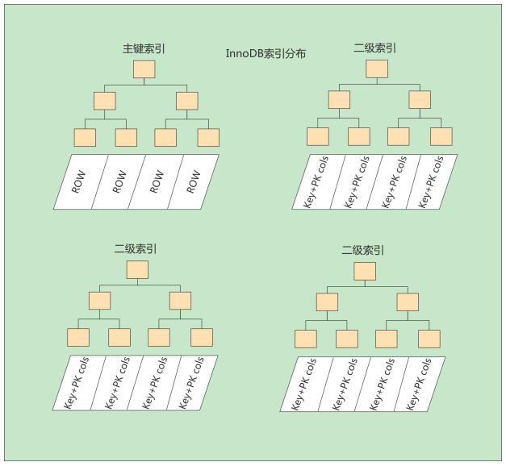
小结：聚簇索引与非聚簇索引的原理不同，在使用上也有一些区别：
- 聚簇索引的
叶子节点存储的就是我们的数据记录，非聚簇索引的叶子节点存储的是数据位置。非聚簇索引不会影响数据表的物理存储顺序。 - 一个表
只能有一个聚簇索引，因为只能有一种排序存储的方式，但可以有多个非聚簇索引，也就是多个索引目录提供数据检索。 - 使用聚簇索引的时候，数据的
查询效率高，但如果对数据进行插入，删除，更新等操作，效率会比非聚簇索引低。
# 联合索引
我们也可以同时以多个列的大小作为排序规则，也就是同时为多个列建立索引，比方说我们想让 B + 树按 照 c2 和 c3 列 的大小进行排序，这个包含两层含义：
- 先把各个记录和页按照 c2 列进行排序。
- 在记录的 c2 列相同的情况下，采用 c3 列进行排序
为 c2 和 c3 建立的索引的示意图如下：
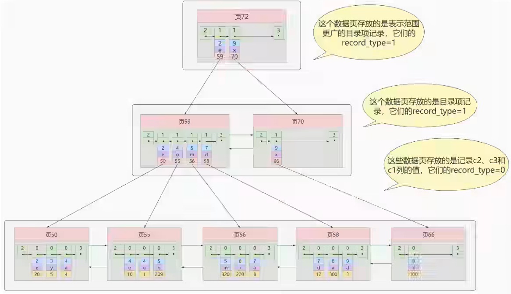
如图所示，我们需要注意以下几点：
- 每条目录项都有 c2、c3、页号这三个部分组成，各条记录先按照 c2 列的值进行排序，如果记录的 c2 列相同，则按照 c3 列的值进行排序
- B + 树叶子节点处的用户记录由 c2、c3 和主键 c1 列组成
注意一点，以 c2 和 c3 列的大小为排序规则建立的 B + 树称为 联合索引 ，本质上也是一个二级索引。它的意 思与分别为 c2 和 c3 列分别建立索引的表述是不同的，不同点如下：
- 建立 联合索引 只会建立如上图一样的 1 棵 B + 树。
- 为 c2 和 c3 列分别建立索引会分别以 c2 和 c3 列的大小为排序规则建立 2 棵 B + 树。
# InnoDB 的 B + 树索引的注意事项
根页面位置万年不动
实际上 B + 树的形成过程是这样的：
- 每当为某个表创建一个 B + 树索引（聚簇索引不是人为创建的，默认就有）的时候，都会为这个索引创建一个
根结点页面。最开始表中没有数据的时候，每个 B + 树索引对应的根结点中即没有用户记录，也没有目录项记录。 - 随后向表中插入用户记录时，先把用户记录存储到这个
根节点中。 - 当根节点中的可用
空间用完时继续插入记录，此时会将根节点中的所有记录复制到一个新分配的页，比如页a中，然后对这个新页进行页分裂的操作，得到另一个新页，比如页b。这时新插入的记录根据键值（也就是聚簇索引中的主键值，二级索引中对应的索引列的值）的大小就会被分配到页a或者页b中，而根节点便升级为存储目录项记录的页。
这个过程特别注意的是：一个 B + 树索引的根节点自诞生之日起，便不会再移动。这样只要我们对某个表建议一个索引，那么它的根节点的页号便会被记录到某个地方。然后凡是 InnoDB 存储引擎需要用到这个索引的时候，都会从哪个固定的地方取出根节点的页号，从而来访问这个索引。
内节点中目录项记录的唯一性
我们知道 B + 树索引的内节点中目录项记录的内容是 索引列 + 页号 的搭配，但是这个搭配对于二级索引来说有点不严谨。还拿 index_demo 表为例，假设这个表中的数据是这样的：
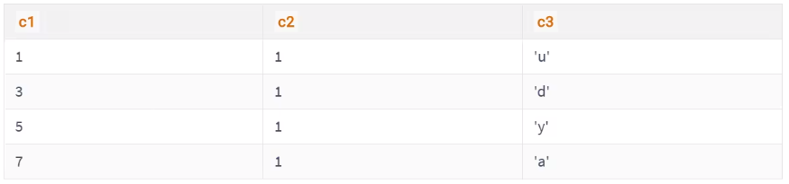
如果二级索引中目录项记录的内容只是 索引列 + 页号 的搭配的话，那么为 c2 列简历索引后的 B + 树应该长这样：
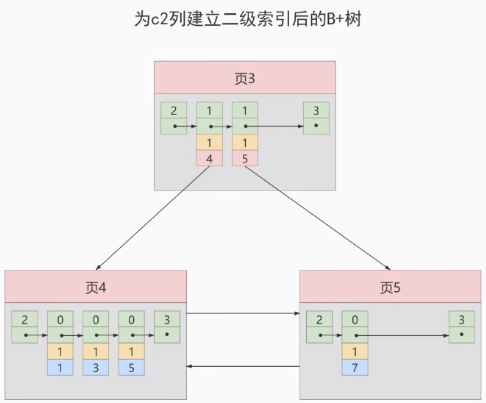
如果我们想新插入一行记录，其中 c1 、 c2 、 c3 的值分别是: 9 、 1 、 c , 那么在修改这个为 c2 列建立的二级索引对应的 B+ 树时便碰到了个大问题：由于 页3 中存储的目录项记录是由 c2列 + 页号 的值构成的， 页3 中的两条目录项记录对应的 c2 列的值都是 1，而我们 新插入的这条记录 的 c2 列的值也是 1 ，那我们这条新插入的记录到底应该放在 页4 中，还是应该放在 页5 中？答案：对不起，懵了
为了让新插入记录找到自己在那个页面，我们需要保证在 B + 树的同一层页节点的目录项记录除页号这个字段以外是唯一的。所以对于二级索引的内节点的目录项记录的内容实际上是由三个部分构成的：
- 索引列的值
- 主键值
- 页号
也就是我们把 主键值 也添加到二级索引内节点中的目录项记录，这样就能保住 B+ 树每一层节点中各条目录项记录除页号这个字段外是唯一的，所以我们为 c2 建立二级索引后的示意图实际上应该是这样子的：
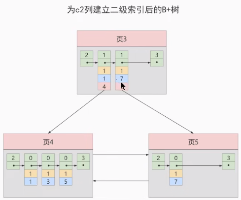
这样我们再插入记录 (9, 1, 'c') 时，由于 页3 中存储的目录项记录是由 c2列 + 主键 + 页号 的值构成的，可以先把新纪录的 c2 列的值和 页3 中各目录项记录的 c2 列的值作比较，如果 c2 列的值相同的话，可以接着比较主键值，因为 B + 树同一层中不同目录项记录的 c2列 + 主键 的值肯定是不一样的，所以最后肯定能定位唯一的一条目录项记录，在本例中最后确定新纪录应该被插入到 页5 中。
一个页面最少存储 2 条记录
一个 B + 树只需要很少的层级就可以轻松存储数亿条记录，查询速度相当不错！这是因为 B + 树本质上就是一个大的多层级目录，每经过一个目录时都会过滤掉许多无效的子目录，直到最后访问到存储真实数据的目录。那如果一个大的目录中只存放一个子目录是个啥效果呢？那就是目录层级非常非常多，而且最后的那个存放真实数据的目录中只存放一条数据。所以 InnoDB 的一个数据页至少可以存放两条记录。
# MyISAM 中的索引方案
# MyISAM 索引的原理
我们知道 InnoDB中索引即数据 ，也就是聚族索引的那棵 B + 树的叶子节点中已经把所有完整的用户记录都包含了，而 MyISAM 的索引方案虽然也使用树形结构，但是却将索引和数据分开存储：
- 将表中的记录
按照记录的插入顾序单独存储在一个文件中，称之为数据文件。这个文件并不划分为若干个数据页，有多少记录就往这个文件中塞多少记录就成了。由于在插入数据的时候并没有刻意按照主键大小排序，所以我们并不能在这些数据上使用二分法进行查找。 - 使用 MyISAM 存储引擎的表会把索引信息另外存储到一个称为
索引文件的另一个文件中。MyISAM 会单独为表的主键创建一个索引，只不过在索引的叶子节点中存储的不是完整的用户记录，而是主键值 ＋数据记录地址的组合。
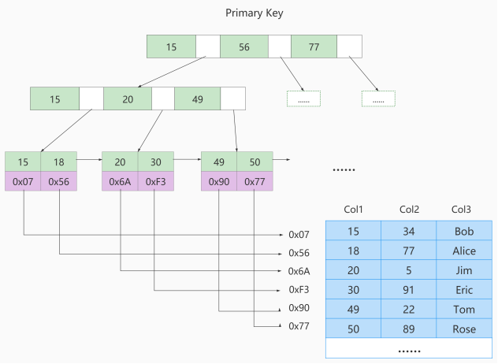
这里设表一共有三列，假设我们以 col1 为主键，上图是一个 MyISAM 表的主索引 (Primary key) 示意。可以看出 MyISAM的索引文件仅仅保存数据记录的地址 。在 MyISAM 中，主键索引和二级素引 (Secondary key）在结构上没有任何区别，只是主键索引要求 key 是唯一的，而二级素引的 key 可以重复。如果我们在 Col2 上建立一个二级索引，则此素引的结构如下图所示：
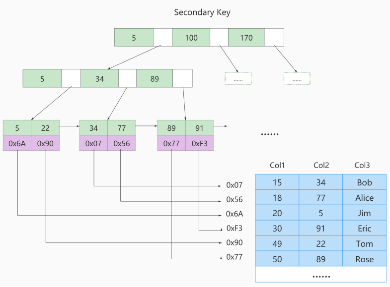
同样也是一棵 B+Tree， data 域保存数据记录的地址。因此，MyISAM 中索引检索的算法为：首先按照 B+Tree 搜索算法搜索索引，如果指定的 key 存在，则取出其 data 域的值，然后以 data 域的值为地址，读取相应数据记录。
# MyISAM 与 InnoDB 对比
MyISAM 的索引方式都是 “非聚簇” 的，与 InnoDB 包含 1 个聚簇索引是不同的。小结两种引擎中索引的区别：
- 在 InnoDB 存储引擎中，我们只需要根据主键值对 聚簇索引 进行一次查找就能找到对应的记录，而在 MyISAM 中却需要进行一次 回表 操作，意味着 MyISAM 中建立的索引相当于全部都是 二级索引 。
- InnoDB 的数据文件本身就是索引文件，而 MyISAM 索引文件和数据文件是 分离的 ，索引文件仅保存数 据记录的地址。
- InnoDB 的非聚簇索引 data 域存储相应记录 主键的值 ，而 MyISAM 索引记录的是 地址 。换句话说， InnoDB 的所有非聚簇索引都引用主键作为 data 域。
- MyISAM 的回表操作是十分 快速 的，因为是拿着地址偏移量直接到文件中取数据的，反观 InnoDB 是通 过获取主键之后再去聚簇索引里找记录，虽然说也不慢，但还是比不上直接用地址去访问。
- InnoDB 要求表 必须有主键 （ MyISAM 可以没有 ）。如果没有显式指定，则 MySQL 系统会自动选择一个 可以非空且唯一标识数据记录的列作为主键。如果不存在这种列，则 MySQL 自动为 InnoDB 表生成一个隐 含字段作为主键，这个字段长度为 6 个字节，类型为长整型。
小结：
了解不同存储引擎的索引实现方式对于正确使用和优化索引都非常有帮助。比如：
举例 1：知道了 InnoDB 的索引实现后，就很容易明白 为什么不建议使用过长的字段作为主键 ，因为所有二级索引都引用主键索引，过长的主键索引会令二级索引变得过大。
举例 2：用非单调的字段作为主键在 innoDB 中不是个好主意，因为 InnoDB 数据文件本身是一棵 B+Tree，非单调的主键会造成在插入新记录时，数据文件为了维持 B+Tree 的特性而频繁的分裂调整，十分低效，而使用 自增字段作为主键则是一个很好的选择 。
# 索引的代价
索引是个好东西，可不能乱建，它在空间和时间上都会有消耗：
空间上的代价
每建立一个索引都要为它建立一棵 B + 树，每一棵 B + 树的每一个节点都是一个数据页，一个页默认会 占用 16KB 的存储空间，一棵很大的 B + 树由许多数据页组成，那就是很大的一片存储空间。
时间上的代价
每次对表中的数据进行 增、删、改 操作时，都需要去修改各个 B + 树索引。而且我们讲过，B + 树每 层节点都是按照索引列的值 从小到大的顺序排序 而组成了 双向链表 。不论是叶子节点中的记录，还 是内节点中的记录（也就是不论是用户记录还是目录项记录）都是按照索引列的值从小到大的顺序 而形成了一个单向链表。而增、删、改操作可能会对节点和记录的排序造成破坏，所以存储引擎需 要额外的时间进行一些 记录移位 ， 页面分裂 、 页面回收 等操作来维护好节点和记录的排序。如果 我们建了许多索引，每个索引对应的 B + 树都要进行相关的维护操作，会给性能拖后腿。
一个表上索引建的越多，就会占用越多的存储空间，在增删改记录的时候性能就越差。为了能建立又好又少的索引，我们得学学这些索引在哪些条件下起作用的。